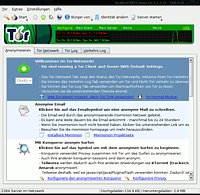

TorK
Archivierte Anleitung
Dieser Artikel wurde archiviert, da er - oder Teile daraus - nur noch unter einer älteren Ubuntu-Version nutzbar ist. Diese Anleitung wird vom Wiki-Team weder auf Richtigkeit überprüft noch anderweitig gepflegt. Zusätzlich wurde der Artikel für weitere Änderungen gesperrt.
Zum Verständnis dieses Artikels sind folgende Seiten hilfreich:
TorK  ist ein Anonymitäts-Manager für den KDE-Desktop. Er unterstützt und vereinfacht es zum Beispiel, anonym zu surfen, zu chatten und anonyme SSH/Telnet Verbindungen aufzubauen und anonyme E-Mails zu versenden. Obwohl er sich eher an nicht so versierte Computerbenutzer richtet, sind die Einstellungen von TorK etwas kompliziert (da überladen). Und viele sehr einfach zu erreichende Einstellungen stellen, gerade für denjenigen, der nicht soviel Ahnung von Tor hat, sogar eine Gefahr dar.
ist ein Anonymitäts-Manager für den KDE-Desktop. Er unterstützt und vereinfacht es zum Beispiel, anonym zu surfen, zu chatten und anonyme SSH/Telnet Verbindungen aufzubauen und anonyme E-Mails zu versenden. Obwohl er sich eher an nicht so versierte Computerbenutzer richtet, sind die Einstellungen von TorK etwas kompliziert (da überladen). Und viele sehr einfach zu erreichende Einstellungen stellen, gerade für denjenigen, der nicht soviel Ahnung von Tor hat, sogar eine Gefahr dar.
TorK entstand im Laufe der Tor: GUI Competition und zählte mit Archiv/Vidalia und Torbutton zu den "Gewinnern". Allerdings wird von den offiziellen Tor-Maintainern und dem Großteil der Community Vidalia auf Grund der Komplexität und der KDE-Abhängigkeiten von TorK bevorzugt.
Damit TorK überhaupt einen Nutzen bringt, muss mindestens Tor installiert sein. Will man anonym Surfen, zusätzlich noch ein HTTP-Proxy wie Privoxy und will man mit TorK auch anonym E-Mails versenden, muss man Archiv/Mixminion installiert haben.
Installation¶
 Für Lucid] kann man TorK bequem aus den Paketquellen installieren [1]:
tork (universe)
 mit apturl
mit apturl
Paketliste zum Kopieren:
sudo apt-get install tork
sudo aptitude install tork
Konfiguration¶
Je nachdem wie man Tor installiert hat, wird TorK beim ersten Start direkt Tor erkennen und sich einklinken. Wenn dies nicht funktioniert, sollte man erstmals den Tor-Dienst einmalig im Terminal [4] aus den runlevels (=Autostart) löschen, damit Tor nicht automatisch beim Booten gestartet wird, sondern erst mit dem Start von TorK:
sudo update-rc.d -f tor remove
Dies wirkt sich aber erst ab dem nächsten Neustart des Systems aus. Man sollte nun noch abschließend Tor von Hand beenden:
sudo /etc/init.d/tor stop
Jetzt geht man in TorK unter "Einstellungen -> TorK konfigurieren -> schnell konfigurieren" und wählt dort in der DropDown-Box "Tor-Klienten mit Standardeinstellungen laufen lassen". Nun kann man im Hauptfenster unter dem Punkt "Anonymisieren" durch einen Klick auf das Zwiebel-Symbol Tor starten und gleichzeitig von TorK überwachen lassen.
Unter "Einstellungen -> TorK konfigurieren" findet man noch eine ganze Reihe weiterer Einstellungen. Einige davon sind nur wirksam, wenn man die 0.2.X Alpha-Version von Tor benutzt. Die meisten Einstellungen können auch nur verändert werden, wenn man Tor in TorK zuvor beendet hat.
Schnell konfigurieren¶
Hier kann man erstmal einstellen, wie Tor von TorK überwacht werden wird. Man kann einstellen, dass man Tor selbst konfigurieren möchte oder dass TorK die Einstellungen übernehmen soll. Dabei kann man noch festlegen, als was Tor laufen soll, also als Client oder Server.
Unter "Warnnachrichten" und "Fragenachrichten" kann man einstellen, bei welchen Ereignissen TorK einen warnen soll. Standardmäßig sind alle Nachrichten aktiviert. Will man sie deaktivieren, muss man bei der entsprechenden Nachricht den Haken entfernen.
Konqueror¶
Hier legt man, fest ob Privoxy automatisch gestartet wird oder erst von TorK gestartet werden soll. Außerdem die Ports für Konqueror, damit er Tor benutzt und weitere Schutzmechanismen die zum anonymen Surfen notwendig sind. Genaueres über deren Notwendigkeit kann man im Artikel Anonym Surfen nachlesen.
Grundsätzlich sind hier alle Einstellungen für Konqueror und Privoxy bereits richtig eingestellt. Man sollte also nur etwas verändern, wenn man weiß, was man tut.
Auch wenn in den Dialogen überall nur von Privoxy gesprochen wird, kann man über die Option "Lass TorK Privoxy starten und als meinen Privacy Proxy verwenden" auch einen anderen Pfad auswählen, zum Beispiel den von Polipo und dann unter dem Raster "Konqueror Einstellungen" anstelle des Privoxy-Ports den Polipo-Port (8123) angeben.
Mein Tor Client¶
Unter "Starte Tor" kann man ein paar Sicherheitseinstellungen vornehmen, wie dass sich TorK per Passwort an dem Kontrollport von Tor anmelden soll. Dies ist bereits voreingestellt und sollte so gelassen werden. Hat man Tor so installiert, dass es nur unter einem bestimmten Nutzer läuft und dieser Nutzer ein anderer ist, als derjenige der TorK startet, kann man dies ebenfalls hier einstellen.
Im Raster "Benutze Tor" kann man festlegen, auf welchem Port Tor lauschen soll, standardmäßig 9050 und ob andere Server im Netzwerk auf diesen Tor-Dienst zugreifen dürfen.
Firewall/Zensur Umgehen¶
Hier trifft man Einstellungen, falls man hinter einer restriktiven Firewall sitzt, über einen Zwangsproxy ins Internet muss oder der Provider bestimmte Ports sperrt.
FailSafe¶
Diese Option ist nur mit der Tor-Alpha-Version benutzbar und man kann festlegen, dass für jede Verbindung ein neuer Circuit aufgebaut werden soll oder dass mit IPtables-Filterregeln für alle Anwendungen auf dem PC die DNS-Namensauflösung über Tor erzwungen werden soll.
Benutzerfreundlichkeit¶
Unter "Benutzerfreundlichkeit" legt man bestimmte Domains oder Ports fest, bei welchen man während einer Session immer die gleiche Exit-Node verwenden möchte. Dies ist bei Diensten und Webseiten hilfreich, bei denen man eine lange und konstante Verbindung haben möchte.
Meine Netzwerksicht¶
Hier kann man Exit-Nodes festlegen, die entweder nie oder bevorzugt benutzt werden sollen. Unter "Besondere Freunde" kann man festlegen, dass eine bestimmte Domain ausschließlich über eine bestimmte Exit-Node angesteuert werden soll.
Mein Tor Server¶
Hier stellt man ein, dass man einen Tor-Server betreiben möchte.
Meine Server Bandbreite¶
Hier die Bandbreite des Servers.
Meine versteckten Dienste¶
In diesem Raster kann man seinen eigenen "HiddenService" einrichten, welcher nur aus dem Tor-Netzwerk zu erreichen ist. Richtet man zum Beispiel einen Webserver als "Hiddenservice" ein, sind alle Verbindungen zu ihm anonym. Das heißt kein Besucher der Webseite kann dessen IP-Adresse oder Standort herausfinden.
Benutzung¶
Das Hauptfenster von TorK bietet einem die Möglichkeit, Tor zu starten und zu beenden. Außerdem kann man über "Bürger von..." einstellen, dass man nur über Exitnodes aus einem bestimmten Land surfen möchte und über "Identität ändern" kann man einstellen, dass alle folgenden Verbindungen über einen anderen Exitnode als die vorherigen Verbindungen laufen.
Anonymisieren¶
Im Raster Anonymisieren zeigt TorK seine Stärke. Nachdem man Tor gestartet hat, kann man hier eine Menge Programme so starten, dass sie mit Tor vorkonfiguriert gestartet werden und man anonym ist. So kann man die Browser Konqueror, Opera und Firefox von TorK starten lassen. Diese sind dann gleich anonym vorkonfiguriert und automatisch so eingestellt, dass sie Tor benutzen. Das gleiche gilt auch für die anderen Starter, die man hier für andere Anwendungen wie Gaim, Pidgin, SSH, Telnet,... findet. Für anonymes E-Mailen wird Archiv/Mixminion benötigt, welches natürlich zuvor installiert werden muss.
Tor Netzwerk¶
In diesem Raster sieht man die momentan erstellten Circuits und die über Tor ausgehenden Verbindungen.
Tor Log¶
Dies ist die normale Tor-Logfile, nur etwas graphisch aufgewertet.
Verkehrs Log¶
Hier sieht man die History dessen, was man im "Tor Netzwerk"-Raster gezeigt bekommt.
- Erstellt mit Inyoka
-
 2004 – 2017 ubuntuusers.de • Einige Rechte vorbehalten
2004 – 2017 ubuntuusers.de • Einige Rechte vorbehalten
Lizenz • Kontakt • Datenschutz • Impressum • Serverstatus -
Serverhousing gespendet von